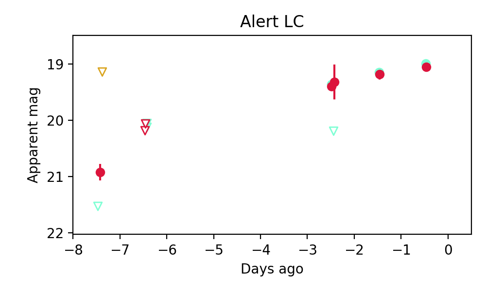

Candidate List 20250828Previous Day Next Day
Section 1: New Sources (age<1d) Section 2: Old (1-5d) sources observed last nightplaceholder
Section 2: Older Sources Observed Last Night (2)
0. ZTF25abkotkh (Afterglow?FBOT?) [Back to Top] [Share] [Trigger Swift] [Fritz] [Lasair]RA, Dec: 237.59212, 29.02457 15h50m22.11s, 29d 1m28.46sGalactic (l, b): 46.50348, 50.72169 ext(g-r) = 0.038


SDSS (10 arcsec):Found SDSS phot-z: z=0.11; peak abs mag = -19.58
PS1: 0 sources in 3 arcsec
LegacySurvey: 1 sources in 3 arcsec Closest: d = 0.29 arcsec, 245.4 deg (east of north) photoz=0.05 (68% bounds 0.02, 0.11), type=SER peak abs mag = -17.46 (68% bounds -16.03, -19.4)

Extinction-corrected gr color:
From alerts: -0.07 +/- 0.1 mag
Extinction-corrected ri color:
From alerts: 1.76 +/- 99 mag
Consistent with synchrotron, g-r>0!
Rise Rate:
g: 1.07 mag/day
r: 0.3 mag/day
i: -99 mag/day
Fade Rate:
g: 19.27 mag/day
r: -99 mag/day
i: -99 mag/day
1. ZTF25abmgzst (FBOT?) [Back to Top] [Share] [Trigger Swift] [Fritz] [Lasair]RA, Dec: 236.81442, 34.0226 15h47m15.46s, 34d 1m21.35sGalactic (l, b): 54.37107, 51.82685 ext(g-r) = 0.031

SDSS (10 arcsec):Found SDSS phot-z: z=0.54; peak abs mag = -21.93
PS1: 0 sources in 3 arcsec
LegacySurvey: 1 sources in 3 arcsec Closest: d = 1.17 arcsec, 110.1 deg (east of north) photoz=0.18 (68% bounds 0.15, 0.22), type=REX peak abs mag = -19.03 (68% bounds -18.58, -19.58)

Extinction-corrected gr color:
From alerts: -0.42 +/- 0.21 mag
Extinction-corrected gi color:
From alerts: -0.7 +/- 0.26 mag
Extinction-corrected ri color:
From alerts: -0.29 +/- 0.22 mag
Rise Rate:
g: 0.22 mag/day
r: 0.2 mag/day
i: -99 mag/day
Fade Rate:
g: -99 mag/day
r: -99 mag/day
i: -99 mag/day